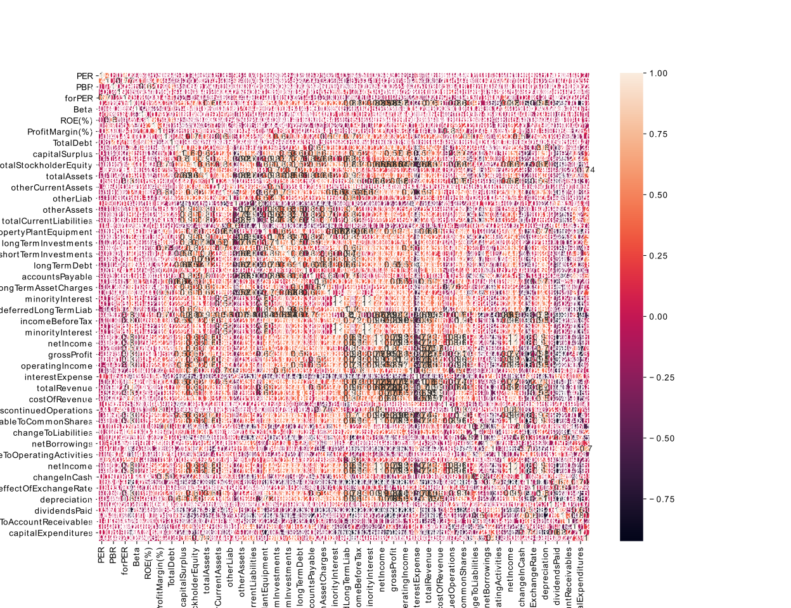

The prediction of stock's price using Linear Regression for Machine Learning (1)
28 Nov 2021Outline
1. Introduction
This is purpose is prediction of stock’s price using ML with financial statements.
I have already gotten financial statements up to yahoo’s fianance web.This method have alreday been explained by this link. If you want how to get, you should check it. And this full idea has been already explained for kaggle.
The overall method will be carried out in the following …
- Dats Preprocessing
- Correlation for features
- Modeling
- Conclusion
Data Preprocessing
It is imfortant to analyze data for ML. I only use the recent value and numeric datas. Some example are B (bilion) -> 10^9 and etc… Link. And then, I load preprocessed data.
- Previous Data Preprocessing
- Additional Data Preprocessing
Previous Data Preprocessing
Load Financial statements of stock preprocessed
df_stats = pd.read_json(url+'/data_preprocessing/{0}_stats_element.json'.format(index_name))
df_addstats = pd.read_json(url+'/data_preprocessing/{0}_addstats_element.json'.format(index_name))
df_balsheets = pd.read_json(url+'/data_preprocessing/{0}_balsheets_element.json'.format(index_name))
df_income = pd.read_json(url+'/data_preprocessing/{0}_income_element.json'.format(index_name))
df_flow = pd.read_json(url+'/data_preprocessing/{0}_flow_element.json'.format(index_name))
Merge dataframe
df = pd.concat([df_stats, df_addstats, df_balsheets, df_income, df_flow], axis=1)
Check numeric datasets
from pandas.api.types import is_numeric_dtype
num_cols = [is_numeric_dtype(dtype) for dtype in df.dtypes]
Split data and test for correlation
from sklearn.model_selection import train_test_split
train_df_corr, test_df_corr = train_test_split(df, test_size=0.2)
Correlation for features and Heatmap
corrmat = train_df_corr.corr()
top_corr_features = corrmat.index[abs(corrmat['marketCap'])>0]
plt.figure(figsize=(13,10))
plt_corr = sns.heatmap(train_df_corr[top_corr_features].corr(), annot=True)
We can think how to consider features for changing the degree of correlation.
It is a value that does not take into account any degree.

There are many values that do not matter if viewed simply because there are tickers that contain insufficient information.Therefore, we need additional preprocessing to process in sufficient information.